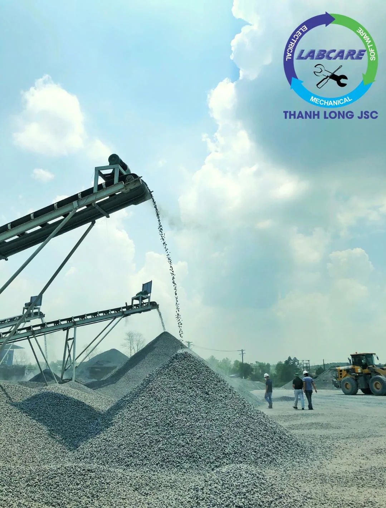
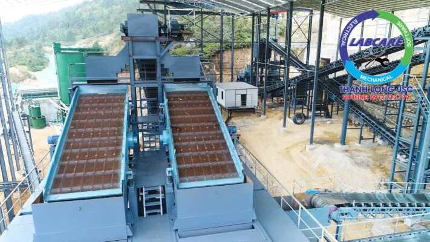
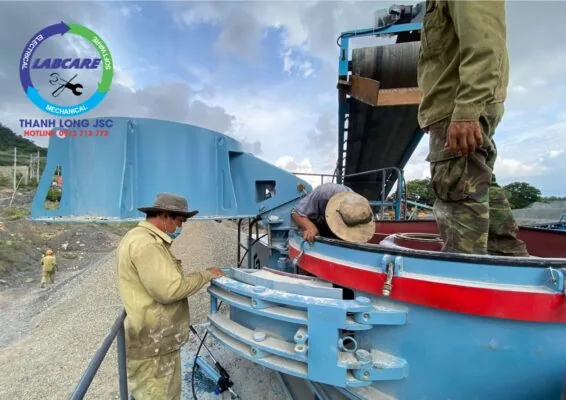
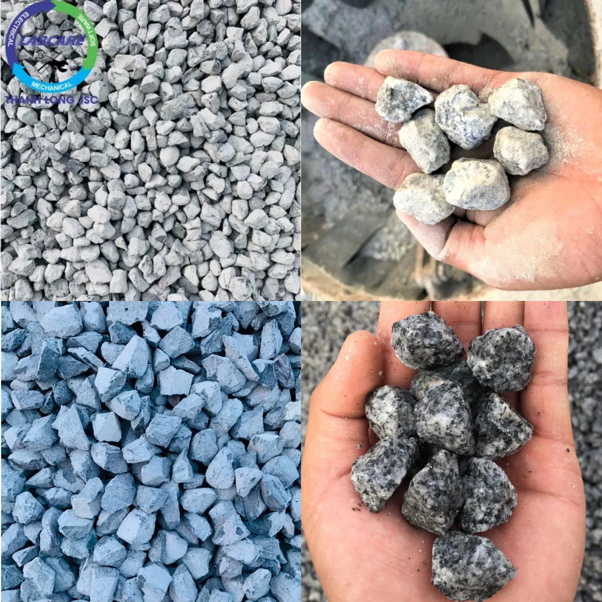

Dây chuyền nghiền đá SRH là công ty thế giới trong ngành khai thác khoáng sản. So với các nhà sản xuất khác, các sản phẩm trong dây chuyền nghiền đá được các chủ mỏ tin dùng. Nhờ độ chính xác cao, tiết kiệm năng lượng và chi phí vận hành thấp. Điều đó đã được thể hiện từ khi thành lập đến nay, doanh số bán hàng về máy nghiền đá của SRH luôn đứng đầu thế giới nói chung và thị trường Việt Nam nói riêng.
Là đại lý của SRH tại Việt Nam, Thanh Long JSC có đội ngũ kỹ sư tay nghề cao, giàu kinh nghiệm, trẻ và năng động, được đào tạo chuyên nghiệp từ nhà máy. Do đó, quá trình lắp đặt hệ thống cũng như tư vấn lựa chọn dây chuyền luôn mang lại hiệu quả cao. Tiết kiệm cho chủ đầu tư rất nhiều tiền bạc và công sức. Điển hình và đi đầu đó là mô hình sản xuất cát nhân tạo lớn nhất Việt Nam. Hay trạm nghiền cấp phối tạo ra cỡ hạt đạt tiêu chuẩn nhất cho cao tốc Trung Lương -Mỹ Thuận. Bắc Giang- Lạng Sơn, sân bay Long Thành …
Mặc dù như vậy nhưng dây chuyền nghiền đá SRH vẫn còn một số điểm rất “thấp” và ngay cả SRH cũng không thể làm gì được với những điều sau đây:
1.Thời gian thu hồi vốn ngắn nhất => đồng nghĩa với các chi phí hoạt động thấp.
Thu hồi vốn ngắn nhất được hiểu một cách đơn giản là, khoảng thời gian thu hồi vốn cần thiết. Nguồn tiền kiếm được trong thời gian kinh doanh, được thu hồi lại bằng với chi phí đầu tư được bỏ ra lúc ban đầu. Đây được coi là thước đo giá trị của dự án, mọi đánh giá về giá trị và tiềm năng của dự án sẽ thu hút các nhà đầu tư quan tâm. Nên thời gian thu hồi vốn là điều đáng được chú trọng ở mỗi dự án kinh doanh. Tức là trước khi quyết định thực hiện một dự án nào đó. Nhà đầu tư luôn quan tâm đến mất bao nhiêu lâu để họ thu hồi lại số vốn bỏ ra?
Lấy một so sánh cụ thể như sau: Một dây chuyền 250 tấn/giờ của dây dây chuyền nghiền đá SRH, cam kết đủ công suất, không có thời gian dừng máy, tiết kiệm điện … Sản phẩm đá đầu ra đạt chuẩn cung cấp cho các dự án lớn nhỏ, với chi phí thành phẩm ~ 20-30.000 ngàn đồng/khối đá.
Một dây chuyền 250 tấn/giờ Việt Nam tự chế, Nhật bãi, Trung Quốc, … Thì công suất chỉ đạt dưới 180 tấn/giờ. Các máy tự chế máy cũ Nhật bãi rất hay xảy ra sự cố và sẽ dừng máy không thời hạn. Việc dừng máy sẽ dẫn tới các chi phí hoạt động tăng lên như:. Xe đào, xe xúc. Xe ben phải dừng lại nhưng mình vẫn phải thanh toán lương công nhân. Tiền thuê bãi (nếu có), các dự án cung cấp đá sẽ tạm dừng. Uy tín công ty đi xuống, … Chi phí thành phẩm ở mức trên 45.000 ngàn đồng/khối đá.

2. Tiêu thụ điện năng thấp.
Tiết kiệm năng lượng nói chung, tiết kiệm điện nói riêng là. Vấn đề gắn liền với lợi ích của công ty và doanh nghiệp lớn nhỏ. Trong điều kiện giá nguyên liệu đầu vào cho sản xuất ngày càng tăng cao, đầu ra của sản phẩm đang bị cạnh tranh. Do đó các công ty doanh nghiệp sản xuất sử dụng điện, với số lượng lớn càng cần phải nỗ lực hơn nữa. Trong việc thực hành tiết kiệm năng lượng để hạ giá thành sản phẩm đầu ra, tăng sức cạnh tranh của hàng hóa trên thị trường.
Tiết kiệm điện năng là một trong những yếu tố quan trọng để góp phần hạ giá thành sản phẩm, tăng doanh thu. Đồng thời còn chia sẻ gánh nặng với ngành điện, trong việc tiết giảm lượng điện năng tiêu thụ. Nhất là trong những tháng cao điểm của mùa hè.
Ví dụ máy nghiền SV của SRH sử dụng động cơ 110kW-150KW =>. Tiết kiệm điện năng tiêu thụ hàng năm. Vẫn giữ hiệu suất cao nhất mà còn tiết kiệm điện hơn 4000đ/ khối đá. Còn các máy Nhật bãi, Trung Quốc hoặc Hàn Quốc:. Đều Sử dụng 2 động cơ 132kW = 264kW hoặc 320kW nhưng công suất lại kém hơn.

3. Thời gian dừng máy không có khi sử dụng Dây chuyền nghiền đá SRH
Không nhiều doanh nghiệp quan tâm tới khoản chi phí này. Tuy nhiên trên thực tế, dây chuyền ngừng hoạt động lại gây ra thiệt hại cho doanh nghiệp. Nếu không phải doanh nghiệp chủ động ngừng máy mà do sự cố ngoài ý muốn, thì thật sự rất lớn.
Dừng máy sẽ kéo theo các bộ phận liên quan dừng lại như:. Xe ben, xe xúc. Xe cuốc, trạm cân, vận hành máy. Tuy nhiên công ty vẫn phải thanh toán khoản lương cho họ. Các dự án tạm hoãn vì không có nguyên vật liệu cung cấp sẽ giảm uy tín của chủ mỏ … Kéo theo rất nhiều hệ lụy về sau.

4. Chi phí hao mòn thấp = Tiêu hao vật tư thấp
Ví dụ đơn cử về máy nghiền côn, một số hãng của Mỹ sử dụng vòng bi để duy trì chuyển động của trục dù. Dẫn đến chi phí vận hành cao, cực kỳ khó khăn cho vận hành và bảo quản sữa chữa. Nhưng máy nghiền côn của SRH (HP, GP, MP…) sử dụng bạc đồng, quá trình làm mát và vận hành dễ dàng hơn, thay thế vận hành chi phí thấp hơn 2 lần so với dòng vòng bi.
Máy nghiền cát SV với công nghệ đá va đá, sản phẩm tạo ra sẽ có Module hạt đồng đều. Ít hạt mịn tiết kiệm dao nghiền cát, với 35.000-40.000 khối cát/ 1 bộ dao. Đây cũng là sản phẩm bán ưu việt nhất trên thị trường.
Hiện tại, không có nhà sản xuất nào có thể tiết kiệm được dao nghiền như SV của SRH, đó là lý do vì sao mà SV của SRH có mặt ở tất cả các mỏ cát nhân tạo và sỏi sông trên thế giới cũng như tại Việt Nam.
5. Chi phí bảo trì, bảo dưỡng thấp
Chi phí bảo trì là một trong những khoản chi phí bắt buộc của mỗi doanh nghiệp. Đặc biệt là những đơn vị có nhiều hệ thống máy móc, phân xưởng.
Dây chuyền nghiền đá SRH sử dụng các máy móc trong quá trình hoạt động cũng sẽ phát sinh ra lỗi sự cố. Ban đầu chúng có thể chỉ là các lỗi nhỏ không đáng chú ý, thậm chí bị bỏ qua. Nhưng càng về lâu dài, máy sẽ hoạt động không còn ổn định và việc bảo dưỡng lúc này là rất cần thiết. Để giúp tăng tuổi thọ sử dụng cũng như hạn chế được những trục trặc xảy ra. Khiến bạn phải tốn kém tiền sửa chữa hay mất an toàn lao động. Mỗi chi tiết máy có một tuổi thọ và khả năng hoạt động khác nhau. Vì thế việc bảo dưỡng nên diễn ra định kỳ là tốt nhất.
Bài Những sự cố của máy nghiền côn thường gặp và cách giải quyết hiệu quả mình đã viết rất cụ thể các bạn tham khảo tại đây

6. Hệ thống IC Tự động hóa không phụ thuộc vào trình độ người vận hành (trình độ thấp vẫn vận hành được) đối với dây chuyền nghiền đá SRH.
Hệ thống tự động hóa máy nghiền mới giúp cải thiện hơn nữa hoạt động của máy nghiền của bạn. Với hệ thống tự động, bạn có thể kiểm soát bảo trì. Chỉnh sửa cài đặt, theo dõi sản xuất và trích xuất dữ liệu. Bạn có thể dễ dàng làm tất cả điều này gần máy nghiền, hoặc từ phòng điều khiển. Có thể tăng sản lượng của mình lên hơn 10%.
Một dây chuyền nghiền đá SRH 250 tấn/giờ chỉ cần 2 người vận hành, còn các dây chuyền Việt Nam tự chế, Nhật Bản thì luôn có sự cố bất ngờ nên cần gần 10 người vận hành.
Hệ thống IC Tự động hóa giúp tiết kiệm chi phí cho công ty.
Với SRH, chi phí bảo trì cho tự động hóa trong khai thác đá là thấp hơn vì nó không thường xuyên hỏng hóc. Đầu tư kế hoạch cẩn thận vào SRH tự động hóa là có ý nghĩa tài chính tốt. Thời gian hoàn vốn ngắn cho chi phí lao động giảm tương đương với lợi ích đầu tư 30% -50%.
Dây chuyền nghiền đá SRH thật sự “bất lực” khi ở Việt Nam không nhà cung cấp nào làm được, hoặc copy được công nghệ tân tiến nhất từ SRH. Ở tại thị trường Việt Nam, THANH LONG JSC là đại diện số 1 của SRH.
Công ty THANH LONG JSC chuyên cung cấp dây chuyền máy nghiền đá, máy nghiền cát nhân tạo, máy rửa cát, máy tách cát mịn, máy nghiền côn, kẹp hàm, băng tải, sàng rung, máy nghiền cát nhân tạo VSI, vật tư trạm nghiền đến từ Thanh Long với giá tốt nhất.
Để biết thêm thông tin chi tiết hơn về các loại dây chuyền sản xuất máy nghiền đá và dây chuyền nghiền cát nhân tạo, từ thủ công đến thủ công chuyên nghiệp. Hãy liên hệ ngay với chúng tôi qua SĐT: 0912-712-772 để được báo giá miễn phí, tư vấn các giải pháp đầu tư tiết kiệm và nâng cao hiệu quả trong công việc.
